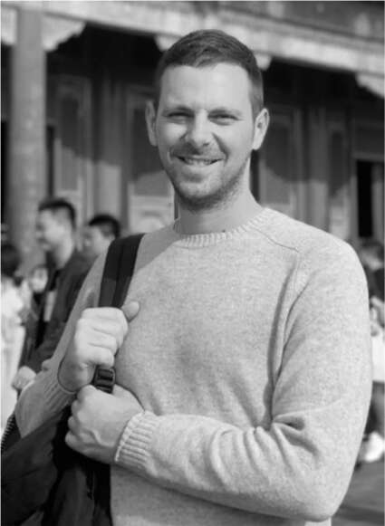
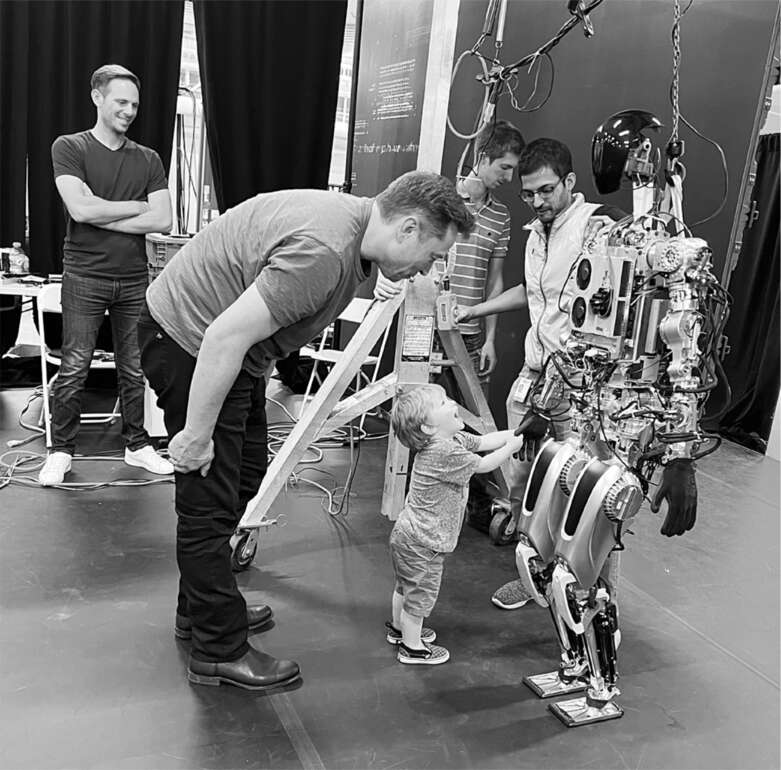

Tóc cháy khét
“Sức khỏe tinh thần của tôi lên xuống thất thường”, Musk nói khi bay từ Austin đến Thung lũng Silicon vào thứ Ba, ngày 27 tháng 9, để chuẩn bị cho AI Day 2, buổi thuyết trình công khai lớn mà ông đã hứa về công việc trí tuệ nhân tạo của Tesla, xe tự lái và ra mắt robot Optimus. “Nó tệ khi có áp lực cực độ. Nhưng nếu nhiều việc bắt đầu suôn sẻ, thì nó cũng không tốt cho sức khỏe tinh thần của tôi.”
Rất nhiều việc ập đến với ông trong tuần đó. Ông dự kiến sẽ đưa ra lời khai trong vụ kiện tại tòa án Delaware nhằm buộc ông hoàn tất thương vụ Twitter, một cuộc điều tra của SEC và một vụ kiện thách thức khoản bồi thường Tesla của ông. Ông cũng lo lắng về những tranh cãi xung quanh việc sử dụng vệ tinh Starlink ở Ukraine, những khó khăn trong việc giảm sự phụ thuộc vào chuỗi cung ứng của Tesla vào Trung Quốc, vụ phóng bốn phi hành gia (bao gồm một nữ phi hành gia người Nga) lên Trạm Vũ trụ Quốc tế bằng tên lửa Falcon 9, một vụ phóng ở Bờ Tây cùng ngày với tên lửa Falcon 9 mang 52 vệ tinh Starlink, và nhiều vấn đề cá nhân liên quan đến con cái, bạn gái và vợ cũ.
Musk giải tỏa căng thẳng bằng nhiều cách, một trong số đó là sự hài hước. Trên chuyến bay về phía tây, ông hào hứng với ý tưởng mới nhất về quà tặng họ có thể bán: một loại nước hoa có mùi tóc người cháy khét. Khi hạ cánh, ông gọi cho Steve Davis, CEO của The Boring Company, người trước đây đã thực hiện ý tưởng bán súng phun lửa đồ chơi của Musk. “Nước hoa tóc cháy!”, Musk nói, tưởng tượng ra câu chào hàng. “Bạn có thích mùi mà bạn đã trải nghiệm sau khi dùng súng phun lửa không? Chúng tôi có mùi hương đó dành cho bạn!” Davis luôn sẵn lòng chiều theo Musk. Ông đã gửi yêu cầu đến các phòng thí nghiệm mùi hương nói rằng ai là người đầu tiên tạo ra được mùi hương phù hợp sẽ nhận được hợp đồng. Khi The Boring Company chào bán nó trên trang web của mình, Musk đã tweet: “Hãy mua nước hoa của tôi, để tôi có thể mua Twitter.” Trong vòng một tuần, nó đã bán hết ba mươi nghìn đơn đặt hàng với giá 100 đô la mỗi chiếc.
Khi đến trụ sở Tesla, ông đến một sân khấu tạm thời trong phòng trưng bày rộng lớn đang được chuẩn bị cho AI Day 2 vào thứ Sáu đó. Một phiên bản gần như hoàn chỉnh của Optimus đang treo lơ lửng trên một giá đỡ, sẵn sàng để thực hành. Khi một kỹ sư hét lên “Kích hoạt”, một người khác đã nhấn nút màu đỏ để Optimus bắt đầu đi. Nó lê bước đến phía trước sân khấu, dừng lại và vẫy tay như một vị vua uy nghiêm. Trong giờ tiếp theo, nhóm nghiên cứu đã cho Optimus thực hiện các bước của nó thêm hai mươi lần nữa. Cảnh tượng nó đi đến mép sân khấu, dừng lại, nhìn xung quanh rồi vẫy tay trở nên mê hoặc. Sau vòng cuối cùng trong ngày, X tiến đến Optimus và chạm vào các ngón tay của nó.
Kỹ sư Milan Kovac, người chỉ đạo các buổi luyện tập, nói: "Tôi nghĩ mình bị rối loạn căng thẳng hậu sang chấn. Sau lần trước, thật khó để giữ bình tĩnh." Tôi nhận ra anh ấy chính là kỹ sư từng hứng chịu cơn thịnh nộ của Musk một năm trước, trong buổi diễn tập cho AI Day 1, vì bài thuyết trình của anh bị cho là quá nhàm chán. Sau sự việc đó, anh đã suy nghĩ về việc nghỉ việc hàng tuần liền. "Nhưng tôi quyết định rằng sứ mệnh này quá quan trọng", anh nói.
Khi AI Day 2 đến gần vào tháng 9 năm 2022, Kovac lấy hết can đảm để đề cập với Musk về cuộc cãi vã của họ một năm trước. Musk nhìn anh với vẻ mặt trống rỗng. Kovac hỏi: "Ông có nhớ ông đã ghét bài thuyết trình của tôi như thế nào và liên tục nói với tôi nó tệ ra sao không? Và mọi người đều lo lắng rằng tôi đã nghỉ việc?". Musk tiếp tục nhìn anh chằm chằm. Ông ta không nhớ gì cả.
Buổi diễn tập AI Day
Sau khi bị chụp ảnh với vẻ mặt sưng húp trong kỳ nghỉ hai ngày ở Hy Lạp với Ari Emanuel, Musk quyết định sử dụng thuốc giảm cân Ozempic và theo chế độ ăn kiêng gián đoạn, chỉ ăn một bữa mỗi ngày. Bữa ăn đó, trong trường hợp của ông, là bữa sáng muộn, và phiên bản ăn kiêng của ông cho phép ông ăn thỏa thích trong bữa đó. Lúc 11 giờ sáng thứ Tư, ông đến Palo Alto Creamery, một quán ăn theo phong cách retro, và gọi một chiếc burger thịt nướng phô mai thịt xông khói với khoai lang chiên, một chiếc bánh Oreo và một ly sữa lắc kem bánh quy. X đã giúp ông ăn một ít khoai tây chiên.
Sau đó, ông đến thăm phòng thí nghiệm của Neuralink trong một trung tâm thương mại ở Fremont, nơi ông tập trung vào cơ chế và tín hiệu liên quan đến việc đi bộ. Mặc áo khoác phòng thí nghiệm và bọc giày, Shivon Zilis, DJ Seo và Jeremy Barenholtz đưa ông vào một căn phòng không có cửa sổ, nơi một con lợn tên là Mint đang đi bộ trên máy chạy bộ và được thưởng bằng những lát táo nhúng mật ong. Cứ sau vài phút, nó lại bị giật điện để làm co giật cơ bắp. Họ đang cố gắng giải mã những cơ cấu chấp hành nào liên quan đến hành động đi bộ.
Khi Musk đến trụ sở Tesla, các kỹ sư ở đó cũng đang tập trung vào việc đi bộ. Để chuẩn bị cho buổi ra mắt Optimus dự kiến vào đêm hôm sau, họ đã lập trình cho robot bước những bước ngắn hơn một chút vì sân khấu thuyết trình trơn tru hơn sàn bê tông của xưởng. Nhưng Musk thích sải chân dài hơn và bắt đầu bắt chước John Cleese bước cao trong tiểu phẩm Monty Python "Bộ Silly Walks". Musk nói: "Nó trông ngầu hơn với dáng đi đó". Các kỹ sư bắt đầu điều chỉnh.
Sau đó, ba mươi kỹ sư tập trung quanh Musk để nghe ông động viên. Ông nói: "Robot hình người sẽ mở ra nền kinh tế đến mức gần như vô hạn".
Drew Baglino nói thêm: "Robot công nhân sẽ giải quyết vấn đề thiếu tăng trưởng dân số".
Musk đáp: "Đúng vậy, nhưng mọi người vẫn nên có con. Chúng ta muốn ý thức con người tồn tại".
Đêm đó, chúng tôi đã có một chuyến du hành hoài niệm nhỏ đến tòa nhà ba tầng ở rìa trung tâm thành phố Palo Alto, nơi từng là văn phòng nhỏ bé của Zip2, công ty khởi nghiệp mà ông và Kimbal thành lập hai mươi bảy năm trước. Huýt sáo như đang mơ màng, ông đi vòng quanh tòa nhà cố gắng vào trong. Nhưng tất cả các cửa đều bị khóa, và một tấm biển "Cho thuê" được dán trên cửa sổ. Sau đó, ông đi hai dãy nhà đến Jack in the Box, nơi ông và Kimbal ăn mỗi ngày. Ông nói: "Bây giờ tôi đáng lẽ phải nhịn ăn, nhưng tôi phải mua thứ gì đó ở đây". Tại loa mua hàng từ ô tô, ông hỏi: "Các bạn vẫn còn bán cơm teriyaki chứ?". Họ vẫn còn. Ông gọi một phần cho mình và một chiếc hamburger cho X. Ông trầm ngâm: "Tôi tự hỏi liệu nơi này có còn tồn tại sau hai mươi lăm năm nữa để X có thể đưa con mình đến đây không?".
AI Day 2
Chiều hôm sau, khi Musk đến tham dự buổi ra mắt hoành tráng của Optimus tại AI Day 2, hàng chục kỹ sư với vẻ mặt lo lắng đang hối hả chạy khắp các sảnh. Một kết nối ở phần ngực của Optimus bị lỏng, khiến nó ngừng hoạt động. "Tôi không thể tin được chuyện này lại xảy ra", Kovac nói, anh đang hồi tưởng lại sự cố tại AI Day 1 một năm trước. Cuối cùng, một số kỹ sư đã cố gắng kết nối lại, và họ hy vọng nó sẽ giữ nguyên vị trí. Họ quyết định chấp nhận rủi ro đó. Với sự giám sát của Musk, họ không còn lựa chọn nào khác.
Hai mươi kỹ sư được lên lịch trình tham gia buổi thuyết trình tập trung ở khu vực hậu trường, chia sẻ những câu chuyện căng thẳng. Phil Duan, một chuyên gia học máy trẻ tuổi trong nhóm Autopilot, từng học khoa học thông tin quang học tại quê nhà Vũ Hán, Trung Quốc, sau đó lấy bằng tiến sĩ tại Đại học Ohio. Anh gia nhập Tesla năm 2017, đúng vào thời điểm cao trào của những nỗ lực điên cuồng mà đỉnh điểm là việc Musk thúc đẩy ra mắt xe tự lái vào Autonomy Day năm 2019. "Tôi đã làm việc nhiều tháng liền không nghỉ ngày nào và mệt mỏi đến mức tôi đã nghỉ việc ở Tesla ngay sau Autonomy Day", anh nói. "Tôi kiệt sức. Nhưng sau chín tháng, tôi cảm thấy chán nản, vì vậy tôi đã gọi cho sếp và cầu xin ông ấy cho tôi quay lại. Tôi quyết định thà kiệt sức còn hơn buồn chán."
Tim Zaman, người dẫn dắt nhóm cơ sở hạ tầng trí tuệ nhân tạo, cũng có câu chuyện tương tự. Đến từ miền bắc Hà Lan, anh gia nhập Tesla vào năm 2019. "Khi bạn ở Tesla, bạn sợ đi bất cứ nơi nào khác, bởi vì bạn sẽ cảm thấy rất nhàm chán." Anh vừa có con đầu lòng, một bé gái, và biết rằng Tesla không phải là môi trường lý tưởng cho sự cân bằng giữa công việc và cuộc sống. Tuy nhiên, anh vẫn dự định ở lại. "Tôi sẽ dành vài ngày nghỉ tới bên vợ con", anh nói, "nhưng nếu tôi nghỉ cả tuần, đầu óc tôi sẽ tê liệt."
Tại AI Day trước đó, không có nữ diễn giả nào trong số hai mươi người thuyết trình. Lần này, một trong những người đồng dẫn chương trình là một kỹ sư thiết kế cơ khí lôi cuốn tên là Lizzie Miskovetz. Khi tiếng nhạc ầm ĩ lắng xuống và Optimus sắp xuất hiện, cô khuấy động khán giả bằng cách thông báo: "Đây là lần đầu tiên chúng tôi thử nghiệm robot này mà không cần bất kỳ sự hỗ trợ dự phòng nào, không cần cần cẩu, không cần cơ cấu hỗ trợ - không dây cáp, không gì cả!"
Tấm màn mang logo hình hai bàn tay của Optimus tạo thành hình trái tim được kéo ra. Optimus, không bị ràng buộc, đứng tự tin và bắt đầu giơ tay. "Nó di chuyển được, nó hoạt động rồi", Duan nói ở hậu trường. Sau đó, nó vẫy tay, xoay cẳng tay và cử động cổ tay. Các kỹ sư nín thở khi nó bắt đầu đưa chân phải về phía trước. Bước đi cứng nhắc nhưng tự tin đến trước sân khấu, nó thực hiện một cú vẫy tay trang trọng. Chiến thắng, nó giơ nắm đấm phải lên không trung, nhảy một điệu nhỏ, sau đó quay lại và bước vào sau tấm màn.
Ngay cả Musk cũng có vẻ nhẹ nhõm. "Mục tiêu của chúng tôi là tạo ra một robot hình người hữu ích càng nhanh càng tốt", ông nói với khán giả. Cuối cùng, ông hứa hẹn, sẽ có hàng triệu robot như vậy. "Điều này đồng nghĩa với một tương lai thịnh vượng, một tương lai không còn nghèo đói. Chúng ta có thể đủ khả năng để có một mức thu nhập cơ bản phổ quát cho mọi người. Đó thực sự là một sự chuyển đổi nền tảng của nền văn minh."

Milan Kovac

X bắt tay Optimus khi Milan Kovac và Anand Swaminathan chứng kiến